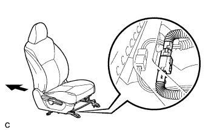
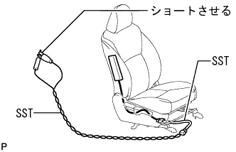
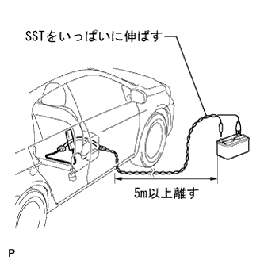
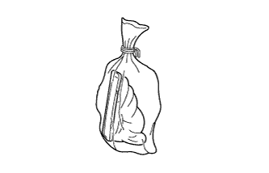
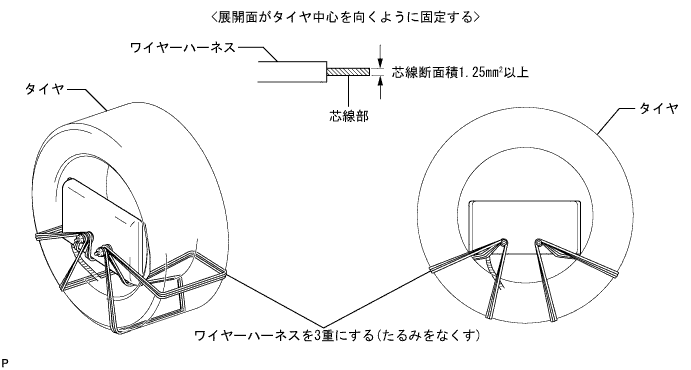
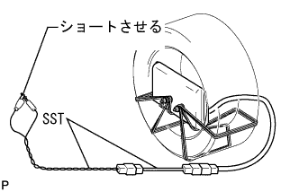
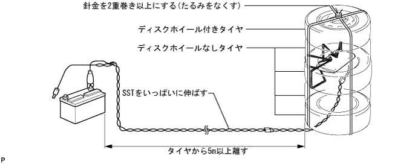

Front Seat Airbag Assembly RH Disposal |
| 1. Dispose of Front Seat Airbag Assembly RH (When Scrapping Vehicle) |
 |
Disconnect Front Seat Airbag Assembly RH Connector
Slide the front seat assembly RH toward the rear of the vehicle and disconnect the front seat airbag assembly RH connector (yellow 2P) under the front seat.
 |
Front Seat Airbag Assembly RH Deployment
Connect the following 2 SSTs.
Short the alligator clip and terminal of the SST.
Connect the SST to the front seat airbag assembly RH connector (yellow 2P) and lock it securely.
 |
Extend the SST fully from the vehicle and place the battery 5m or more away from the vehicle.
After confirming the safety of the vehicle interior and surroundings, connect the SST alligator clip to the battery negative.
Connect the SST terminal to the battery positive and deploy the front seat airbag assembly RH.
 |
Front Seat Airbag Assembly RH Disposal Procedure
Place the deployed front seat airbag assembly RH in a strong, transparent plastic bag, seal it and dispose of it.
| 2. Dispose of Front Seat Airbag Assembly RH (When Disposing of Part Alone) |
Remove Front Seat Assembly RH (see)
Remove Front Seat Airbag Assembly RH (see)
Fix Front Seat Airbag Assembly RH
 |
Install the 2 installation nuts to the front seat airbag assembly RH.
Using a wire harness (conductor cross-sectional area 1.25mm2or more) to fix the front seat airbag assembly RH to the tire.

 |
Front Seat Airbag Assembly RH Deployment
Connect the following 2 SSTs.
Short the alligator clip and terminal of the SST.
Connect the SST to the front seat airbag assembly RH connector (yellow 2P).
As shown in the illustration, place the tire with the front seat airbag assembly RH fixed on top of 2 stacked tires, then place 1 tires on top of it, and a tire with a disc wheel on the very top.
Using wire with a diameter of 1.8mm or more (general-purpose ordinary iron wire: equivalent to JIS SWM-B), wrap the tires together 2 times or more and tie them securely with no slack.
Extend the SST fully from the front seat airbag assembly RH and place the battery 5m or more away from the tires.

 |
Surround the area within a radius of 5m from the outside of the tires with pylons and rope, etc. so that no one can enter.
After confirming the safety of the surroundings, connect the SST alligator clip to the battery negative.
Connect the SST terminal to the battery positive and deploy the front seat airbag assembly RH.
Front Seat Airbag Assembly RH Disposal Procedure
Place the deployed front seat airbag assembly RH in a strong, transparent plastic bag, seal it and dispose of it.